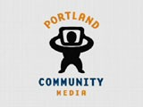

Portland Community Media

Website:
http://www.pcmtv.org/ Location:
Portland, OR
Portland Community Media (PCM) is a nonprofit, public benefit organization dedicated to the production of local, non-commercial SmartAccess media developed and produced in the community, by the community and for the community.
Our mission is to promote broad participation in civic and cultural life by encouraging effective use and understanding of community media.
Since 1981, we have provided equipment and training courses for individuals and organizations to utilize cablecast and other forms of media distribution as a means of communication, civic involvement, artistic and cultural expression and community development.
PCM broadcasts locally produced television programming on six channels: Community Access Network (CAN 11), Metro East 21, Independent Television Network (ITN 22 and ITN 23), Pulse of Portland (POP 29) and CityNet 30.
Supported Projects
Youth Media Curriculum Development
Nickey Robare
7/2008 — 7/2009
The Oregon Learning Lab for Information Education (OLLIE) serves approximately 400 Portland-area youth ages 10 to18 annually. The Initiative is provided in collaboration with MetroEast Community Media, a sister community media organization serving east Multnomah County, combining the considerable youth media expertise of both organizations. Portland Community Media serves as the administrative organization.
OLLIE is a media education program that integrates media and technology literacy with core academic and community learning in classrooms and after-school programs. In each OLLIE project, participants plan and create works of video based on their academic curriculum or community learning focus.
The OLLIE Youth Media VISTA will work with the OLLIE coordinator, educators from Portland Community Media and MetroEast Community Media, and area schools and community centers to meet the goals of the OLLIE project.
Activities include:
- Working with the project staff to develop project curriculum, youth and community outreach efforts (including website), local and national distribution, and evaluation practices
- Establishing ongoing youth involvement opportunities at the media centers
- Building a volunteer and internship program to support the project
- Learning and training others to teach project curriculum and equipment
- Participating in OLLIE Youth Media productions as a media educator
Nickey’s first success with OLLIE came during the culmination of our Moving Images summer workshop – a community screening event. Nickey leveraged her community connections and communication skills to secure donations from local businesses to support the event. She also assisted in a larger campaign to promote the event, which brought over 100 community members to Portland Community Media to watch and discuss videos created by 16 local youth. As a part of her larger efforts to develop ongoing youth involvement activities at the media centers, Nickey has undertaken a research project designed to understand community needs and best practices from other organizations. She has compiled interviews from youth media educators and facilitators from our parent organizations, as well as other local and national youth media projects. As a part of her work with OLLIE Youth Media Nickey has spent time in the field, getting to know the young people, teachers, and organizations we serve. She has excelled at motivating our students to express their ideas though video. Nickey also has made connections between OLLIE and other organizations, encouraging collaboration and outreach for the program.
Nickey has been a great addition to the OLLIE Youth Media team and is still working on several projects. Recently she has done some design work for the project that will be used for program promotion.
Social Media Development
Denise Cheng
7/2008 — 7/2009
Access 2.0 is a three year project to expand access to and viewership of community media through new media channels. In this project, PCM will upgrade its technology and training to integrate new media channels with traditional public access channels to expand and enhance access to media as a communications tool for community members, community-based and non-profit organizations, government partners and other stakeholders. Through Access 2.0, PCM is upgrading equipment, improving technology, upgrading the PCM website, redeveloping the PCM database and reaching out to a number of groups and organizations in the community with an emphasis on underrepresented populations.
The Access 2.0/New Media Vista will work with PCM’s Media Educators and Media Facilitators to:
-Develop media education training projects, classes and curricula for expanding the skills of community producers, organizations and other stakeholders through in new media areas
-Develop skill building activities and materials to improve the competency and confidence of community members and other stakeholders in the use of new media
-Further develop PCM’s drupal-based website to strengthen user participation and better meet user needs
-Actively participate in and contribute to technical planning for PCM’s Access 2.0 project to develop new media opportunities and distribution channels for community members, community-based and non-profit organizations, government partners and other organizations.
-Build skills of community members and stakeholders in new media applications to increase distribution and sharing of community media including blogging, podcasting, cross posting and others
-Initiate and develop participation of PCM in PEGSpace project of the Alliance for Community Media and other collaborative development projects
-Develop new opportunities for volunteer participation, particularly related to new media
Denise’s activities are focused around research and development of new media services and education. She has assisted with development of two new classes that focus on teaching participants how to prepare content for distribution via the Internet, and how to utilize online video and social networking tools to increase distribution of content, and to connect with target audiences. Denise also participates on the PR and Marketing committee, is helping to redesign our website with the goal of building capacity, is participating in grant research and writing, and helps with proofreading and layout in creation of new documents.
Denise researched and proposed a new project that was submitted for consideration to the Knight foundation. Denise’s proposal made it through the first round but has been dropped from consideration by the Knight foundation. PCM will continue to try to secure grant funding to realize this proposal. The proposal would create a new acquisition and distribution path for audio content via a new website portal. The focus of the project targeted increasing participation from immigrant, minority and youth groups using cell phone and Internet technology. Denise’s research identified very high cell phone and Internet penetration among immigrant populations in the Portland area. Denise’s project would also create a backbone for a large scale expansion of Internet based acquisition and distribution for PCM participants.
Denise revised our existing Media Education schedule to create a more polished document to promote Media Education classes and workshops. Denise has routinely been proofreading and editing public documents to maintain voice and consistency.
Denise was asked to submit a design mock-up for our upcoming website redevelopment. Her mock-up showed an advanced understanding of the kind of content rich site that many Internet viewers would appreciate. Denise’s research on social networking and how different groups consume information via the Internet comes through in her clean and rich design concept. Denise is currently assisting with implementation of our new open source database project being developed in partnership with Denver Open Media.
“Denise participation in brainstorming and discussion has provided me with a new perspective on a variety of topics including community media, who we serve, immigrant issues, community engagement and a millenial perspective on technology. Denise has reshaped my views on my career field because she asks questions I’m not often asked, and she brings a different perspective and set of experiences to the organization. I am very grateful for the opportunity to have worked with her.”
- Bea Coulter, supervisor
Youth Media Program Building
Gariet Cowin
9/2006 — 6/2008
OLLIE, Oregon Learning Lab for Information Education
The Oregon Learning Lab for Information Education, also known as OLLIE, is a collaborative effort between Portland Community Media and Metro East Community Media to meet the media education and technology needs of under-served youth, schools, and community-based organizations in Multnomah County, Oregon. OLLIE provides media literacy, tools and training to a variety of young people by bringing multimedia technology into the classroom.
RESPONSIBILITIES:
The VISTA will work with the OLLIE coordinator, educators from Portland Community Media and Multnomah Community Television, and area schools and community centers to meet the goals of the OLLIE project.
Specific responsibilities include but are not limited to:
• Learn and be able to teach the OLLIE curriculum and equipment
• Participate in OLLIE productions as a trainer
• Communicate with OLLIE Coordinator regarding scheduling
• Keep a personal schedule of OLLIE training responsibilities
• Arrive at OLLIE projects on time and prepared
• Working with community partners to plan successful OLLIE projects and events
• Developing youth outreach and education efforts of Portland Community Media and Multnomah Community Television.
• Participate in OLLIE maintenance and development
• Research and submit OLLIE media works to
International, national and local film festivals
In developing OLLIE’s digital distribution strategy, Gariet has achieved three major accomplishments.
First, Gariet brought the OLLIE program and Portland Community Media into the Youth Video Exchange Network (YVXN) as a steering partner. OLLIE’s participation in YVXN has allowed us to share broadcast quality student work with other youth media centers around the country, as well as acquire youth media content to broadcast on our own channels.
In parallel to his work with NYMAP, Gariet also researched and set up a blip.tv site for the OLLIE program. This site allows us to share our videos with others at any time, and in turn allows our visitors to post the videos on their websites and blogs.
Finally, Gariet developed a website for the project using the Drupal content management system. This site provides a comprehensive resource about the program for the communities we serve, and includes a searchable video database. Through his research and work with Drupal and blip.tv for our youth project, Gariet has set a course for the Media Center as a whole. Recently a staff member expressed that Gariet’s ability to explain the benefits and values of these technologies to others led to the media center to develop a digital distribution plan that incorporated the lessons he has learned. Gariet’s work has also had an impact on the larger community, including interesting and attracting a local foundation to provide operational funding for our project.
“Gariet’s technology skills and ability to learn and teach new technologies has been an extremely valuable asset to the OLLIE project. Gariet is also an excellent teacher. He is able to engage and inspire his students as they plan and create their video projects. Gariet’s positive attitude about working with this project and VISTA is enjoyed by those who work with him. His commitment to helping others and the value of youth media is appreciated.”
- Laura Craig-Bennett, supervisor
Oregon Learning Lab Outreach Coordinator
Ryn Shane-Armstrong
9/2005 — 9/2006
Ryn will participate in OLLIE productions as a trainer, work with community partners to plan successful OLLIE projects and events, and develop youth outreach and education efforts of Portland Community Media and Multnomah Community Television.
In the past six months, OLLIE has provided digital media training to over 150 youth through 17 projects at 11 community locations. In addition, OLLIE has scheduled projects to serve an additional 180 youth over the next six months. Each round of OLLIE projects has balanced new and returning community partners. Our VISTA has served as a group coordinator for many of these sites, facilitating communication between the OLLIE staff and volunteers, the OLLIE coordinator, and community partners. Ryn has also begun to identify volunteers to support this project. He identified the post-production talents of a community partner and utilized them to finish a student project.
In addition, OLLIE’s curriculum design has evolved. Based on participant feedback, trainer input, and research into youth media best practices; the teaching methods, practice exercises, and time allotments for each segment of production have changed to better serve the youth we work with. Ryn’s insights about classroom teaching experiences and research into youth media curriculum are of great value to this process. I am looking forward to further utilizing Ryn’s expertise to design and implement our summer intensive “Adventures in Television”sessions. He is one of the leads for this project.
A very exciting part of OLLIE’s evolution is the creation and implementation of a graphic design identity package. Ryn has served as a lead contact in the process of recruiting and hiring a designer, developing a logo, and working with vendors. Currently Ryn is leading efforts to develop and refine copy that will promote the program in print, web, and video materials. Ryn also was able to develop his web design skills to create a first draft of a website for OLLIE: www.ollietv.org. Behind the scenes, he has created extensive outlines for future implementations of a site that will be useful to project staff, community partners, and program participants.
An amazing thing about Ryn is the way in which he integrated himself into the media center community. He put himself ‘out there’ as willing to help, learn, and volunteer on his own time to help others and make the media center a better place. He has organized the staff on more than one occasion to attend cultural events and support each other. He is an exceptional asset to the Oregon Learning Lab for Information Education.
Related Content
None created yet!